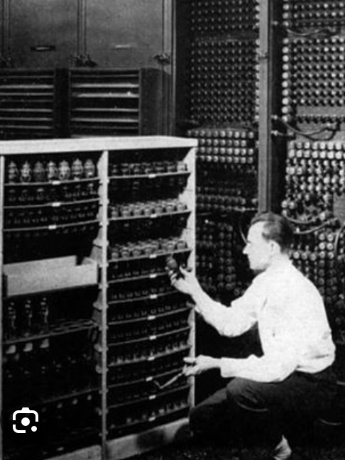

In The Beginning ...
The history of computers starts out about 2000 years ago, with the birth of the abacus. When the beads on the abacus are moved around, according to programming rules memorized by the user, all regular arithmetic problems can be done. In 1671, Gottfried Wilhelm von Leibniz invented a computer that was built in 1694. It could add, and, after changing some things around, multiply. About a century later Thomas of Colmar created the first successful mechanical calculator that could add, subtract, multiply, and divide.
Other Memorable Events ...
In 1812, Babbage realized that many long calculations were really a series of predictable actions that were constantly repeated. He began to design an automatic mechanical calculating machine, which he called a difference engine.
Herman Hollerith and James Powers made a step towards automated computing with the development of punched cards. Reading errors were reduced dramatically, workflow increased, and stacks of punched cards could be used as memory of almost unlimited size. For more than 50 years, punched card machines did most of the world's first business computing.
- The start of World War II produced a large need for computer capacity. In 1942, John P. Eckert and John W. Mauchly decided to build a high - speed electronic computer to do the job. Known as ENIAC, this machine could multiply two numbers at a rate of 300 per second. 
- Early in the 50's two important engineering discoveries changed the image of the computer field - Magnetic Core Memory and Transistor - Circuit Elements. These technical discoveries quickly found their way into computers. Such computers were mostly found in large computer centers operated by industry, government, and private laboratories.
- In the 1960's, efforts to design and develop the fastest possible computer with the greatest capacity reached a turning point with the Stretch computer by IBM. Stretch was made with the fastest access time, and total capacity in the vicinity of 100,000,000 words.
- Many companies, some new to the computer field, introduced programmable minicomputers supplied with software packages in the 1970’s. The "shrinking" trend continued with the introduction of personal computers (PC's), which are programmable machines small enough and inexpensive enough to be purchased and used by individuals. Many companies, such as Apple Computer and Radio Shack introduced very successful PCs in the 1970’s.
- By the late 1980’s, some personal computers were run by microprocessors that, handling 32 bits of data at a time, could process about 4,000,000 instructions per second.
- Computer networking, e-mail and the Internet, and electronic publishing are just a few of the applications that have grown in recent years. Computers continue to decrease in price, offering the promise that soon, “computers will reside in most homes, offices, and schools”.


Great Computer Quotes ...

“Men are form Mars, Women are from Venus, Computers are from Hell.”
~Author Unknown
“Give a person a fish and you feed them for a day;
teach that person to use the Internet and they won't bother you for weeks.”
~Author Unknown
“To err is human, but to really foul things up requires a computer.”
~Farmer's Almanac, 1972
21st Century ...
The most important events in computer world in 21st century are:

- Mac OS X, later renamed OS X then simply macOS, is released in 2001 by Apple as the successor to its standard Mac Operating System.
- AMD's Athlon 64, the first 64-bit processor for personal computers, is released in 2003 to customers.
- The Mozilla Corporation launches Mozilla Firefox 1.0 in 2004. The Web browser is one of the first major challenges to Internet Explorer, owned by Microsoft. During its first five years, Firefox exceeded a billion downloads by users, according to the Web Design Museum.
- Google buys Android in 2005, a Linux-based mobile phone operating system.
- The MacBook Pro from Apple hits the shelves in 2006. The Pro is the company's first Intel-based, dual-core mobile computer.
- Microsoft launches Windows 7 on July 22, 2009. The new operating system features the ability to pin applications to the taskbar, scatter windows away by shaking another window, easy-to-access jumplists, easier previews of tiles and more.
- The iPad, Apple's flagship handheld tablet, is unveiled in 2010.
- Google releases the Chromebook in 2011, which runs on Google Chrome OS.
- Apple releases the Apple Watch in 2015. Microsoft releases Windows 10.
- The first reprogrammable quantum computer was created in 2016.
- The Defense Advanced Research Projects Agency (DARPA) is developing a new "Molecular Informatics" program in 2017 that uses molecules as computers. "Chemistry offers a rich set of properties that we may be able to harness for rapid, scalable information storage and processing," Anne Fischer, program manager in DARPA's Defense Sciences Office, said in a statement. "Millions of molecules exist, and each molecule has a unique three-dimensional atomic structure as well as variables such as shape, size, or even color. This richness provides a vast design space for exploring novel and multi-value ways to encode and process data beyond the 0s and 1s of current logic-based, digital architectures."
U tag in HTML
The Unarticulated Annotation (Underline) element. The U-HTML element represents a span of inline text which should be rendered in a way that indicates that it has a non-textual annotation. This is rendered by default as a simple solid underline, but may be altered using CSS.
I used this tag to underline all years in this article.
CSS Multi-column Layout
The CSS multi-column layout allows easy definition of multiple columns of text - just like in newspapers. I used this style to my "21 Century..." paragraph.